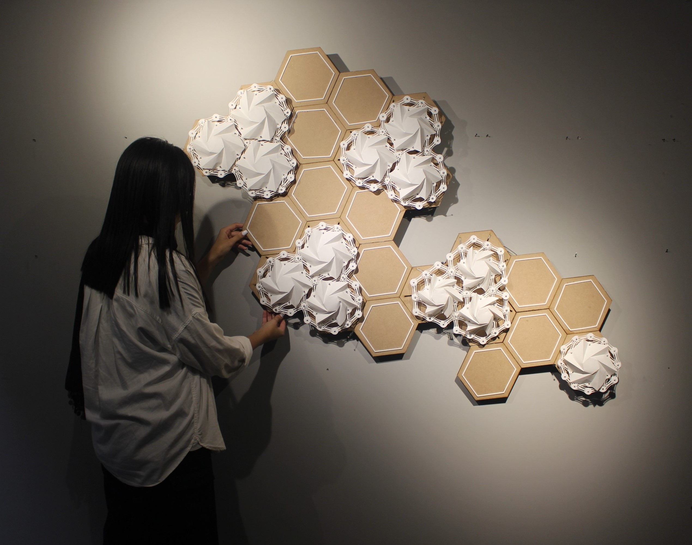

Nuance
Project Duration: Jul 2023 – Oct 2023
Project Supervisor: Dr.Morteza Rahbar
My Role: Research, Design, Fabrication
Nuance is an Adaptive Kinetic Façade System designed carefully to address both technical performance and aesthetic considerations. This innovative structure can be integrated into building façades, leveraging its light sensitivity to enhance energy efficiency and shading optimization. During the day, the movement of origami-inspired modules allows the structure to dynamically control the amount of sunlight entering the building.
As the measure of light level increases, the origami modules gracefully close, allowing sunlight to filter through the façade. Conversely, when the light level decreases, they unfold, creating a dynamic interplay between form and illumination. The panels fully close in low-light situations to maximize daylight entry, while they converge beautifully under sufficient light, allowing precise control over daylight manipulation.
Nuance uses Arduino boards and sensors to create a suitable mechanism for the intended function. The mechanism was thoughtfully integrated with essential components including servo motors, Arduino mega board, and highly responsive Photocell sensors to put the kinetic façade in motion according to the measure of light levels.
The project connects multiple modules to a dynamic engine via cables, ensuring smooth movement as each module is placed on a base. In our exploration, we incorporated ultrasonic sensors to amplify the project’s interactive potential. This dynamic feature can be seamlessly integrated into facades, fostering richer interactions between people and architecture.
Material: Wood, Stone paper, polycarbonate
Fabrication tool: laser cut
Project Gallery:
.jpg)
.jpg)
.jpg)
.jpg)
.jpg)
.jpg)
.jpg)